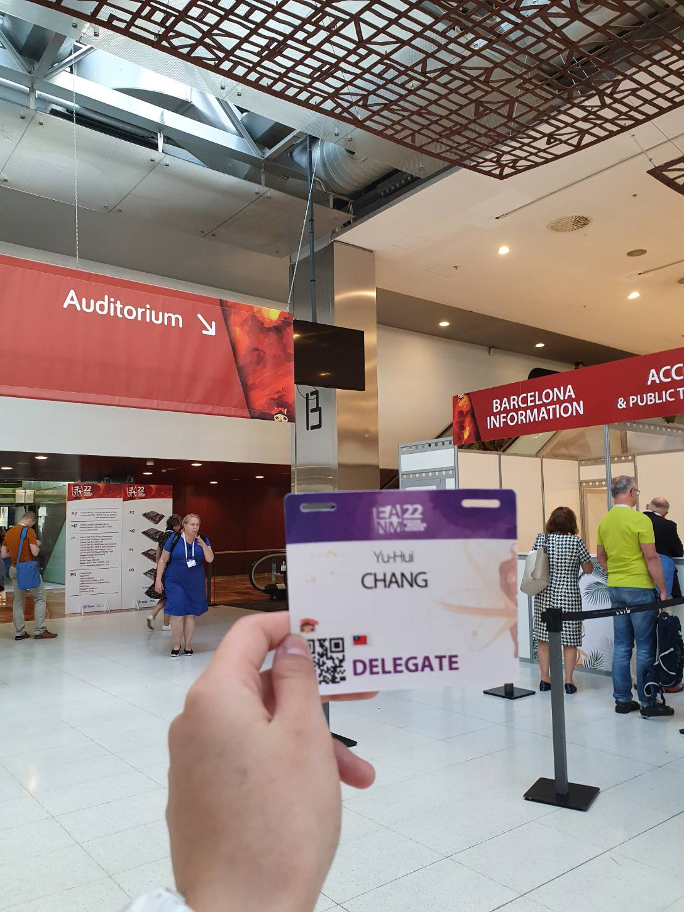

AI Product Manager | Bilingual | Creative Technologist
With hands-on experience in NLP and generative AI, I enjoy turning “what if” ideas into real products that people actually find useful and fun.
Working in a bilingual environment every day, I’m comfortable switching between Mandarin and English to collaborate across teams and cultures.
I have a genuine interest in AI and product design, and I like keeping up with new trends—not just for work, but because learning new things is something I truly enjoy.
I’m naturally curious, love chatting with teammates to exchange ideas, and often gather different perspectives to help shape better and more thoughtful products.
| Category | Skills |
|---|---|
| Product & Collaboration | Agile Development, User-Centered Design, Cross-Functional Communication |
| AI & Programming | Python, PyTorch, Hugging Face Transformers, NLP, Generative AI |
| Tools | Git, GitHub, Google Workspace, Notion, Figma |
| Languages | Mandarin (Native), English (Fluent) |
Aug 2024 – Feb 2025
Dec 2021 – Present
2016 – 2020
Master’s Thesis, National Taiwan University
National Taiwan University, Taiwan
Master of Science in Biomedical Engineering ｜ Sep 2019 – Jun 2023
📍 Barcelona, Spain ｜ 🗓️ October 2022
